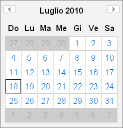

PHP Blast YUI - PHP Blasty 0.1.00 Beta |
Table of Contents Page |
| PHP Blasty Home › User Guide Home › Render YUI pages |
Once loaded PHP Blasty class and almost one component (es. calendar), to get YUI component working is necessary to correctly render the HTML page
To render a YUI working page you need:
YUI to work needs to be included in the HTML page; since YUI is written in Javascripts you need to include JS scripts as usual
...
<script src="http://yui.yahooapis.com/2.8.0r4/build/yahoo-dom-event/yahoo-dom-event.js"></script>
...
YUI is composed by several JS files, one for each widget or utility and some other spare JS and CSS fiels, that needs to be included in the HTML page as needed and in the right order.
...
echo $blasty->yuiTags();
...
Note: For better page rendering perfomance fetch the output of this function in two part.
Fetch CSS on the top of the page in the header using $blasty->yuiTags(YUI_CSS);
Fetch JS code on the bottom of the page near the closing body tag using $blasty->yuiTags(YUI_JS);
To place the YUI widget in the page you need a 'container'. Usually is a div like this
...
<div id="container-name"></div>
...
PHP Blasty will provide the appropriate container for each widget instantiated with $blasty->container('widget_name') function.
...
echo $blasty->container('calendar');
...
To have YUI working in the page is necessary to run some JS code. The appropriate JS code is generated by $blasty->generate() function.
Note: For better page rendering perfomance, place this function in the bottom of the page near the closing body tag.
...
echo $blasty->generate();
...
YUI needs some CSS rules to skin its widgets. To use provided YUI skin, just apply the class 'yui-skin-sam' to the html body
...
<body class="yui-skin-sam">
...
You can provide your personalized CSS ruleset. For more info read YUI 2: Understanding Skins at Yahoo! Developer Network.Some rule have to be respected writing HTML page:
<html>
<head>
<title>Calendar example</title>
<?php echo $blasty->yuiTags(YUI_CSS); ?>
</head>
<body class="yui-skin-sam">
[...] HTML tags [...]
<?php echo $blasty->container('calendar'); ?>
[...] HTML tags [...]
<?php echo $blasty->yuiTags(YUI_JS); ?>
<?php echo $blasty->generate(); ?>
</body>
</html>
If all ingredients were combined correctly the final result will be like this
<html>
<head>
<title>Calendar example</title>
<link rel="stylesheet" type="text/css" href="http://yui.yahooapis.com/2.8.0r4/build/calendar/assets/skins/sam/calendar.css" />
</head>
<body class="yui-skin-sam">
[...] HTML tags [...]
<div id="cal1Container"></div>
[...] HTML tags [...]
<script type="text/javascript" src="http://yui.yahooapis.com/2.8.0r4/build/yahoo-dom-event/yahoo-dom-event.js"></script>
<script type="text/javascript" src="http://yui.yahooapis.com/2.8.0r4/build/calendar/calendar-min.js"></script>
<script type="text/javascript">
(function() {
var Dom = YAHOO.util.Dom,
Event = YAHOO.util.Event;
cal1 = new YAHOO.widget.Calendar("cal1", "cal1Container", {
MD_DAY_POSITION:1,
MD_MONTH_POSITION:2,
MDY_DAY_POSITION:1,
MDY_MONTH_POSITION:2,
MDY_YEAR_POSITION:3,
MY_MONTH_POSITION:1,
MY_YEAR_POSITION:2,
MY_LABEL_MONTH_POSITION:1,
MY_LABEL_YEAR_POSITION:2,
MONTHS_LONG:["Gennaio", "Febbraio", "Marzo", "Aprile", "Maggio", "Giugno", "Luglio", "Agosto", "Settembre", "Ottobre", "Novembre", "Dicembre"],
MONTHS_SHORT:["Gen", "Feb", "Mar", "Apr", "Mag", "Giu", "Lug", "Ago", "Set", "Ott", "Nov", "Dic"],
WEEKDAYS_SHORT:["Do", "Lu", "Ma", "Me", "Gi", "Ve", "Sa"],
WEEKDAYS_MEDIUM:["Dom", "Lun", "Mar", "Mer", "Gio", "Ven", "Sab"],
WEEKDAYS_LONG:["Domenica", "Lunedì", "Martedì", "Mercoledì", "Giovedì", "Venerdì", "Sabato"],
WEEKDAYS_1CHAR:["D", "L", "M", "M", "G", "V", "S"]
});
cal1.render();
})();
</script>
</body>
</html>
